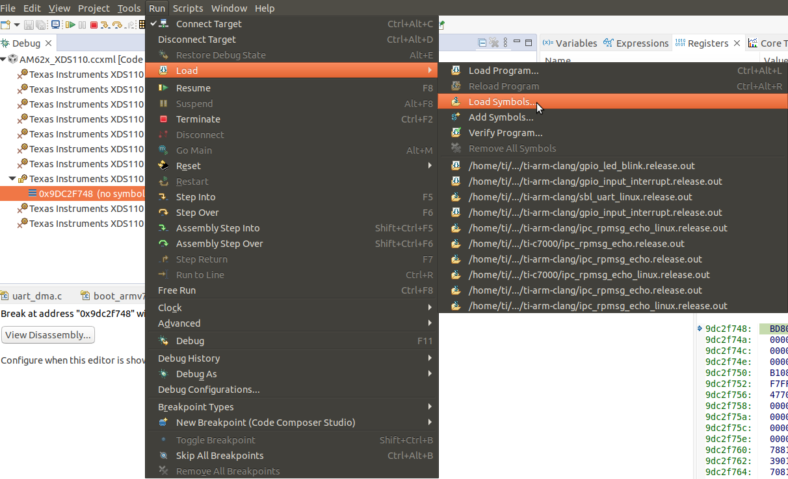
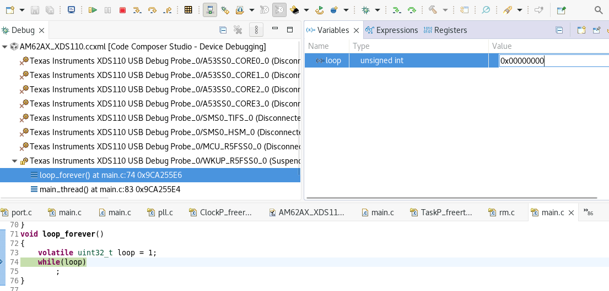

- Attention
- It is recommended to use the TIFS version provided with the release for ensuring compatibility between TIFS and device manager. Using the TIFS from different MCU+SDK release is not recomended and may cause TIFS/ DM functionality to break.
Introduction
- Attention
- DeepSleep low power mode (LPM) is not supported if the DM R5 is used for a general purpose application. This is because when the SoC goes to any LPM, the context of peripherals used by DM R5 will be lost. To use DM R5 for a general purpose application, disable LPM support. Refer Disabling low power mode to know how to disable LPM.
The wake-up R5 (or) device manager(DM) R5 core is responsible for running the DM firmware. The DM firmware is responsible for resource management and power management.
The DM firmware requires following components (as libraries) to be included in the application.
- "rm_pm_hal" consists of the calls for processing resource and power management.
- "sciserver" receives the TI_SCI messages from other cores and processes it.
- "sciclient_direct" calls the rm_pm_hal or sends the messages to TIFS based on the TI_SCI request.
- "self_reset" contains the entry point of the DM firmware application. It resets the DM R5 and enables the TCMA.
- "dm_stub" enables low power mode features.
As the DM firmware requires multiple threads, it requires an RTOS. So any application on DM R5 should start the SCI server on a thread and actual application can be run on a different thread. Refer main.c of any r5fss0-0 example application to see how to implement this.
- Attention
- As the wake-up R5 is the device manager, it needs to be started by the SBL. So it can not be loaded through CCS. It should be flashed and booted through SBL.
- DM firmware needs to be multi-threading/rtos application as it creates multiple threads during initialization.
- DM firmware as part of initialization via self_reset library swaps TCM configuration to have ATCM at 0x41010000 and BTCM at 0x0.
Build and load DMR5 examples
Debugging an application on DMR5 core
- Once the DM R5 is booted through SBL, symbols can be loaded through CCS for loading. Follow the below steps to debug any application developed for DM R5.
- Insert an infinite loop before the start of the test application.
- Connect to WKUP-R5 core for debugging.
- Load the symbols for the test application.

Load Symbols for debug
- Navigate to the ".out" file generated by the test application.
- In the CCS Debug Perspective's Expressions window, enter the loop variable and update its value to 0.

Update expression value
- Continue with the debugging process as usual.
Disabling low power mode
During low power mode DDR is kept in self refresh, because of this DM R5 cannot run from DDR. DM R5 run from the TCM memory. If Customer wants to use the TCM memory for customer application low power mode can be disabled and the memory will be usable for customer application. Follow the steps to free the TCM memory.
- Update the line '-CONFIG_LPM_DM=y' in source/drivers/device_manager/rm_pm_hal/BuildConfiguration
AM62AX.mk to '-CONFIG_LPM_DM=n'.
- Remove the line '-DCONFIG_LPM_DM \' from source/drivers/device_manager/sciclient_direct/makefile.
am62ax.r5f.ti-arm-clang'.
- Remove the line '-DCONFIG_LPM_DM \' from source/drivers/device_manager/sciserver/makefile.
am62ax.r5f.ti-arm-clang.
- Remove the following lines from the linker file of the application that you are building.
GROUP{
.dm_stub_text : {
_privileged_code_begin = .;
_text_secure_start = .;
dm_stub*(.text)
} palign(8)
.dm_stub_data : {
_privileged_data_begin = .;
dm_stub*(.data)
_privileged_data_end = .;
} palign(8)
.dm_stub_bss : {
_start_bss = .;
dm_stub*(.bss)
_end_bss = .;
} palign(8)
.dm_stub_rodata : {
_start_rodata = .;
dm_stub*(.rodata)
_end_rodata = .;
} palign(8)
.dm_stub_stack : {
_start_stack = .;
. += __DM_STUB_STACK_SIZE;
_end_stack = .;
} palign(8)
} load = R5F_TCMB, run = R5F_TCMA
- Rebuild the application.


 1.8.20
1.8.20